There are (at least) three algorithms within NWChem that compute the Møller-Plesset (or many-body) perturbation theory second-order correction to the Hartree-Fock energy (MP2). They vary in capability, the size of system that can be treated and use of other approximations
mp2 on
the task directive, e.g.
TASK MP2
direct_mp2 on the task directive, e.g.
TASK DIRECT_MP2
rimp2 on the task directive, e.g.,
TASK RIMP2
All three MP2 tasks share the same input block.
MP2
[FREEZE [[core] (atomic || <integer nfzc default 0>)] \
[virtual <integer nfzv default 0>]]
[TIGHT]
[PRINT]
[NOPRINT]
[VECTORS <string filename default scf-output-vectors> \
[swap [(alpha||beta)] <integer pair-list>] ]
[RIAPPROX <string riapprox default V>]
[FILE3C <string filename default $file_prefix$.mo3cint">]
[SCRATCHDISK <integer>]
END
All MP2 modules support frozen core orbitals, however, only the direct MP2 and RI-MP2 modules support frozen virtual orbitals.
By default, no orbitals are frozen. The atomic keyword causes
orbitals to be frozen according to the rules in Table
16.1. Note that no orbitals are frozen on
atoms on which the nuclear charge has been modified either by the user
or due to the presence of an ECP. The actual input would be
freeze atomicFor example, in a calculation on 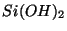, by default the lowest seven orbitals would be frozen (the oxygen 1, and the silicon 1, 2 and 2).
Caution: The rule for freezing orbitals ``by atoms'' are rather unsophisticated: the number of orbitals to be frozen is computed from the Table 16.1 by summing the number of core orbitals in each atom present. The corresponding number of lowest-energy orbitals are frozen -- if for some reason the actual core orbitals are not the lowest lying, then correct results will not be obtained. From limited experience, it seems that special attention should be paid to systems including third- and higher- period atoms.
The user may also specify the number of orbitals to be frozen by atom. Following the example, the user could specify
freeze atomic O 1 Si 3In this case only the lowest four orbitals would be frozen. If the user does not specify the orbitals by atom, the rules default to Table 16.1.
Caution: The system does not check for a valid number of orbitals per atom. If the user specifies to freeze more orbitals then are available for the atom, the system will not catch the error. The user must specify a logical number of orbitals to be frozen for the atom.
The FREEZE directive may also be used to specify the number of
core orbitals to freeze. For instance, to freeze the first 10 orbitals
freeze 10or equivalently, using the optional keyword
core
freeze core 10Again, note that if the 10 orbitals to be frozen do not correspond to the first 10 orbitals, then the
swap keyword of the
VECTORS directive must be used to order the input orbitals
correctly (Section 16.5).
To freeze the highest virtual orbitals, use the virtual
keyword. For instance, to freeze the top 5 virtuals
freeze virtual 5Again, note that this only works for the direct-MP2 and RI-MP2 energy codes.
The TIGHT directive can be used to increase the precision
in the MP2 energy and gradients.
By default the MP2 gradient package should compute energies accurate to better than a micro-Hartree, and gradients accurate to about five decimal places (atomic units). However, if there is significant linear dependence in the basis set the precision might not be this good. Also, for computing very accurate geometries or numerical frequencies, greater precision may be desirable.
This option increases the precision to which both the SCF (from 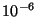 to 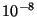) and CPHF (from to ) are solved, and also tightens thresholds for computation of the AO and MO integrals (from 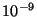 to 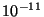) within the MP2 code.
This directive - used only in the semi-direct algorithm - allows to limit the per process disk usage. Mandatory argument for this keyword is the maximum number of MBytes. For example, the following input line
scratchdisk 512puts an upper limit of 512 MBytes to the semi-direct MP2 usage of disk (again, on a per process base).
The standard print control options are recognized. The list of recognized names are given in Table 16.2.
| Item | Print Level | Description |
| RI-MP2 | ||
| ``2/3 ints'' | debug | Partial 3-center integrals |
| ``3c ints'' | debug | MO 3-center integrals |
| ``4c ints b'' | debug | ``B'' matrix with approx. 4c integrals |
| ``4c ints'' | debug | Approximate 4-center integrals |
| ``amplitudes'' | debug | ``B'' matrix with denominators |
| ``basis'' | high | |
| ``fit xf'' | debug | Transformation for fitting basis |
| ``geombas'' | debug | Detailed basis map info |
| ``geometry'' | high | |
| ``information'' | low | General information about calc. |
| ``integral i/o'' | high | File size information |
| ``mo ints'' | debug | |
| ``pair energies'' | debug | (working only in direct_mp2) |
| ``partial pair energies'' | debug | Pair energy matrix each time it is updated |
| ``progress reports'' | default | Report completion of time-consuming steps |
| ``reference'' | high | Details about reference wavefunction |
| ``warnings'' | low | Non-fatal warnings |
All of the (supported) MP2 modules require use of converged canonical
SCF (RHF or UHF) orbitals for correct results. The vectors are by
default obtained from the preceding SCF calculation, but it is
possible to specify a different source using the VECTORS
directive. For instance, to obtain vectors from the file
/tmp/h2o.movecs, use the directive
vectors /tmp/h2o.movecs
As noted above (Section 16.1) if the SCF orbitals are not in
the correct order, it is necessary to permute the input orbitals using
the swap keyword of the VECTORS directive. For
instance, if it is desired to freeze a total six orbitals
corresponding to the SCF orbitals 1-5, and 7, it is necessary to swap
orbital 7 into the 6th position. This is accomplished by
vectors swap 6 7The swap capability is examined in more detail in Section 10.5.
The RI-MP2 method requires a fitting basis, which must be specified
with the name "ri-mp2 basis" (see Section 7).
For instance,
basis "ri-mp2 basis"
O s; 10000.0 1
O s; 1000.0 1
O s; 100.0 1
...
end
Alternatively, using a standard capability of basis sets (Section
7) another named basis may be associated with the
fitting basis. For instance, the following input specifies a basis
with the name "small fitting basis" and then defines this to be
the "ri-mp2 basis".
basis "small fitting basis"
H s; 10 1
H s; 3 1
H s; 1 1
H s; 0.1 1
H s; 0.01 1
end
set "ri-mp2 basis" "small fitting basis"
The default name for the file used to store the transformed 3-center
integrals is "$file_prefix$.mo3cint" in the scratch directory.
This may be overridden using the FILE3C directive. For instance, to
specify the file /scratch/h2o.3c, use this directive
file3c /scratch/h2o.3c
The type of RI approximation used in the RI-MP2 calculation is controlled
by means of the RIAPPROX directive. The two possible values are
V and SVS (case sensitive), which correspond to the
approximations with the same names described in O. Vahtras, J Almlöf,
and M. W. Feyereisen, Chem. Phys. Lett. 213, 514-518
(1993). The default is V.
These options, which functioned at the time of writing, are not currently supported.
Construction of the RI fit requires the inversion of a matrix of
fitting basis integrals which is carried out via diagonalization. If
the fitting basis includes near linear dependencies, there will be
small eigenvalues which can ultimately lead to non-physical RI-MP2
correlation energies. Eigenvectors of the fitting matrix
are discarded if the corresponding eigenvalue is less than
$mineval$ which defaults to . This
parameter may be changed by setting the a parameter in the database.
For instance, to set it to 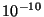
set "mp2:fit min eval" 1e-10
The user has the option of specifying that the RI-MP2 calculations are
to be done with variations of the SCF reference wavefunction. This is
accomplished with a SET directive of the form,
set "mp2:reference spin mapping" <integer array default 0>
Each element specified for array is the SCF spin case to be
used for the corresponding spin case of the correlated calculation.
The number of elements set determines the overall type of correlated
calculation to be performed. The default is to use the unadulterated
SCF reference wavefunction.
For example, to perform a spin-unrestricted calculation (two elements)
using the alpha spin orbitals (spin case 1) from the reference for
both of the correlated reference spin cases, the SET directive
would be as follows,
set "mp2:reference spin mapping" 1 1The SCF calculation to produce the reference wavefunction could be either RHF or UHF in this case.
The SET directive for a similar case, but this time using the
beta-spin SCF orbitals for both correlated spin cases, is as follows,
set "mp2:reference spin mapping" 2 2The SCF reference calculation must be UHF in this case.
The SET directive for a spin-restricted calculation (one
element) from the beta-spin SCF orbitals using this option is as
follows,
set "mp2:reference spin mapping" 2
The SET directive for a spin-unrestricted calculation with the
spins flipped from the original SCF reference wavefunction is as
follows,
set "mp2:reference spin mapping" 2 1
The user can control the size of each batch in the transformation and
energy evaluation in the MP2 calculation, and consequently the memory
requirements and number of passes required. This is done using two
SET directives of the following form,
set "mp2:transformation batch size" <integer size default -1> set "mp2:energy batch size" <integer isize jsize default -1 -1>
The default is for the code to determine the batch size based on the available memory. Should there be problems with the program-determined batch sizes, these variables allow the user to override them. The program will always use the smaller of the user's value of these entries and the internally computed batch size.
The transformation batch size computed in the code is the number of occupied orbitals in the 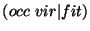 three-center integrals to be produced at a time. If this entry is less than the number of occupied orbitals in the system, the transformation will require multiple passes through the two-electron integrals. The memory requirements of this stage are two global arrays of dimension 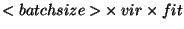 with the ``fit'' dimension distributed across all processors (on shell-block boundaries). The compromise here is memory space versus multiple integral evaluations.
The energy evaluation batch sizes are computed in the code from the number of occupied orbitals in the two sets of three-center integrals to be multiplied together to produce a matrix of approximate four-center integrals. Two blocks of integrals of dimension 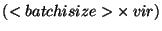 and 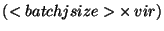 by fit are read in from disk and multiplied together to produce 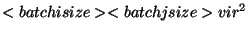 approximate integrals. The compromise here is performance of the distributed matrix multiplication (which requires large matrices) versus memory space.
The user must choose a strategy for the memory allocation in the energy
evaluation phase of the RI-MP2 calculation, either by minimizing the amount
of I/O, or minimizing the amount of computation. This can be accomplished
using a SET directive of the form,
set "mp2:energy mem minimize" <string mem_opt default I>
A value of I entered for the string mem_opt means that a
strategy to minimize I/O will be employed. A value of C tells
the code to use a strategy that minimizes computation.
When the option to minimize I/O is selected, the block sizes are made as large as possible so that the total number of passes through the integral files is as small as possible. When the option to minimize computation is selected, the blocks are chosen as close to square as possible so that permutational symmetry in the energy evaluation can be used most effectively.
For most applications, the code will be able to size the blocks without help from the user. Therefore, it is unlikely that users will have any reason to specify values for these entries except when doing very particular performance measurements.
The size of xf3ci:AO 1 batch size is the most important of the
three, in terms of the effect on performance.
Local memory usage in the first two steps of the transformation is
controlled in the RI-MP2 calculation using the following SET
directives,
set "xf3ci:AO 1 batch size" <integer max> set "xf3ci:AO 2 batch size" <integer max> set "xf3ci:fit batch size" <integer max>
The size of the local arrays determines the sizes of the two matrix
multiplications. These entries set limits on the size of blocks to be
used in each index. The listing above is in order of importance of
the parameters to performance, with xf3ci:AO 1 batch size being
most important.
Note that these entries are only upper bounds and that the program
will size the blocks according to what it determines as the best usage of
the available local memory. The absolute maximum for a block size is
the number of functions in the AO basis, or the number of fitting basis
functions on a node. The absolute minimum value for block size is the
size of the largest shell in the appropriate basis. Batch size entries
specified for max that are larger than these limits are
automatically reset to an appropriate value.
If an MP2 energy gradient is computed, all contributions are available
to form the MP2 linear-response density. This is the density that
when contracted with any spin-free, one-electron operator yields the
associated property defined as the derivative of the energy. Thus,
the reported MP2 dipole moment is the derivative of the energy
w.r.t. an external magnetic field and is not the expectation
value of the operator over the wavefunction. Only dipole moments are
printed by the MP2 gradient code, but natural orbitals are produced
and stored in the permanent directory with a file extension of
".mp2nos". These may be fed into the property package (see
Section 28) to compute more general properties. Note
that the MP2 linear response density matrix is not necessarily
positive definite so it is not unusual to see a few small negative
natural orbital occupation numbers.